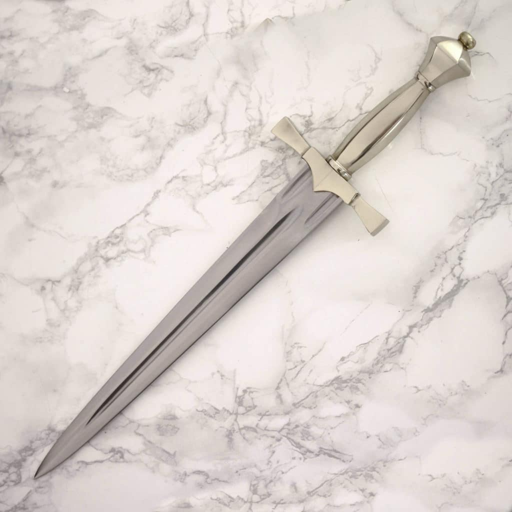

Unsure of how you got here, you look around and take in the environment, You stand in a cramped marble stairwell. There are big lancet windows that shine light upon a box on the stairwell. Inside the box you see a Silver Ornamental Dagger and a Small Golden Mirror.